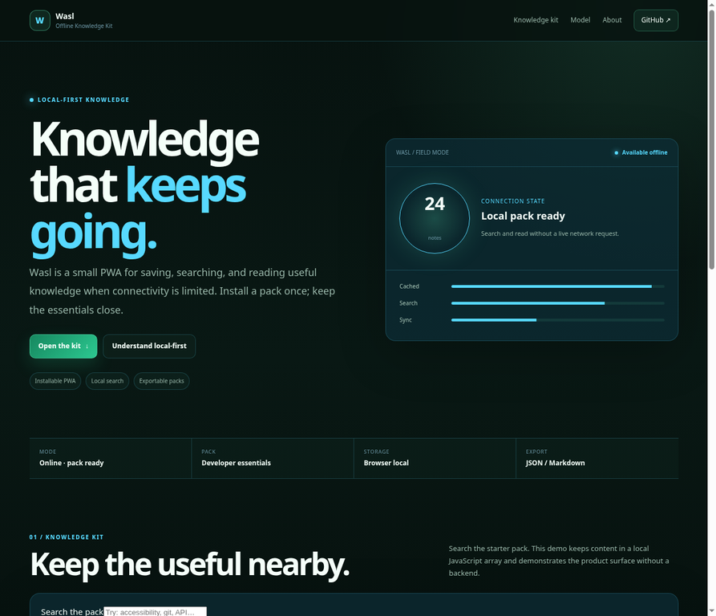
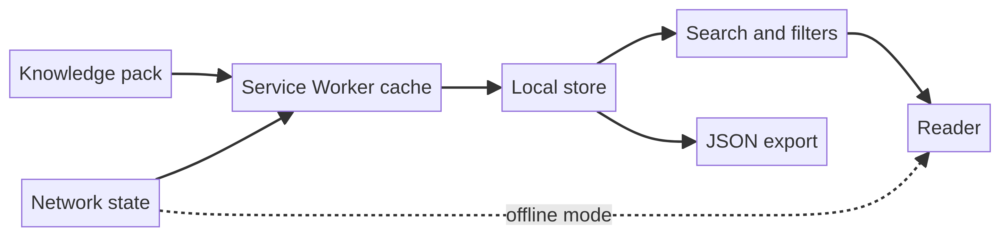

المستخدم الأساسي
الطلاب والمطورون والفرق الصغيرة التي تحتاج مرجعًا محمولًا أكثر من منصة تعاون كاملة.
Wasl حزمة معرفة قابلة للتثبيت والبحث والقراءة عند ضعف الاتصال. يتعامل مع الوضع غير المتصل كحالة منتج واضحة، مع تصدير يحافظ على قابلية نقل المحتوى.

تفترض أدوات كثيرة اتصالًا دائمًا، فتتحول المراجع المفيدة إلى شاشة فارغة عند انقطاع الشبكة. يختبر Wasl أقل تجربة تحفظ حزمة معرفة محدودة وتبحث فيها دون طلب حي.
الطلاب والمطورون والفرق الصغيرة التي تحتاج مرجعًا محمولًا أكثر من منصة تعاون كاملة.
الوضع غير المتصل له عقد واضح: خزّن المحتوى المحدود، اعرض الحالة، واجعل التصدير ظاهرًا.
| الجزء | التنفيذ | الهدف |
|---|---|---|
| قابلية التثبيت | Manifest وService Worker | تحويل الحزمة إلى قدرة صغيرة على الجهاز. |
| حزمة المعرفة | مجموعة محلية محدودة | محتوى قابل للفحص وآمن للعرض العام. |
| البحث | تصفية محلية ووسوم | الوصول للملاحظة دون شبكة. |
| النقل | تصدير JSON | احتفاظ المستخدم بنسخة محمولة. |
تنتقل حزمة المعرفة إلى cache ومتجر محلي ثم إلى البحث والقارئ والتصدير. حالة الشبكة تؤثر على الواجهة لكنها ليست شرطًا لقراءة الحزمة المحدودة.

احتوت الحزمة على خمس ملاحظات. أدى البحث عن `RTL` إلى نتيجة واحدة، وتم فتحها مع وسم `stored locally`، وكان Service Worker متاحًا في المعاينة. هذه اختبارات تفاعل وليست benchmark للموثوقية دون اتصال.
الحد: لا توجد حسابات أو مزامنة أو ضمان حداثة للمحتوى أثناء عدم الاتصال.
إضافة حزم موقعة، تنبيهات تحديث، تخزين مشفّر للمحتوى المعتمد، ومزامنة واعية بالتعارض بعد تعريف الملكية والحداثة.